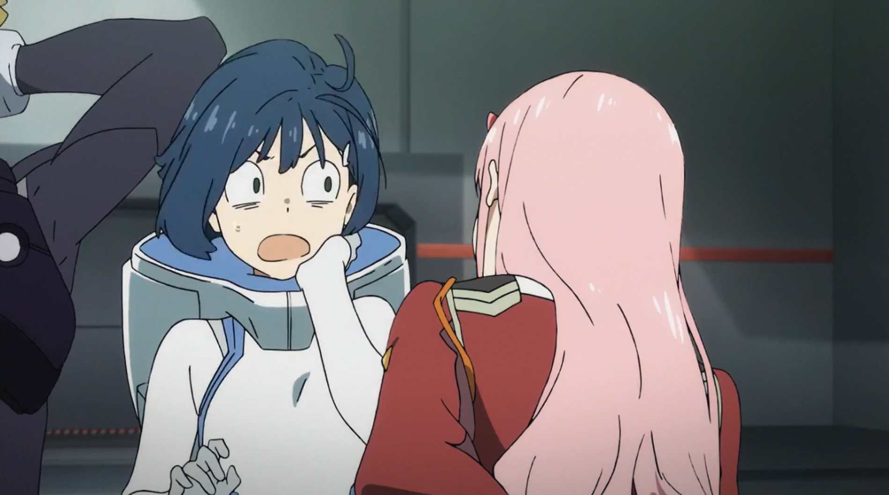
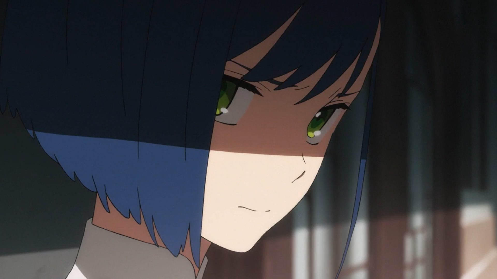
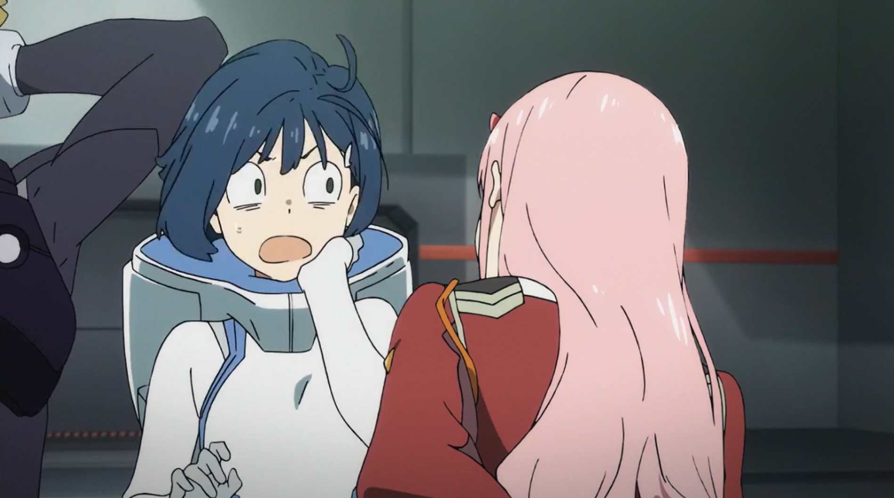
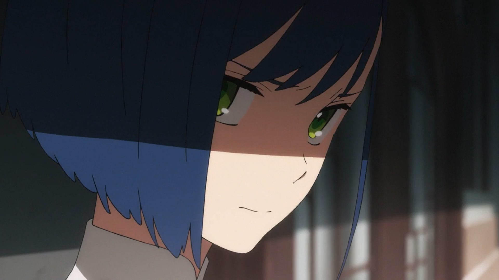

Ичиго
Ичиго — невысокая девочка с дерзким блеском в её мягких зелёных глазах. Она паразит с кодовым названием «015» Тринадцатой плантации. Является официальным лидером команды 13 и партнером Франкса Дельфиниум — ГороВнешность
Ичиго — невысокая девочка с дерзким блеском в её мягких зелёных глазах.У неё прямые, ровно подрезанные волосы, которые почти закрывают ей правый глаз. Левую же часть волос придерживает белая заколка. Она носит стандартную одежду паразита-пестика. Когда она стала взрослой, ее внешность не потерпела серьезных изменений: волосы Итиго стали равномернее расправлены и длиннее с правой стороны. Ее волосы с левой стороны сдерживает ее новая белая заколка для волос, подаренная от Горо. Также она стала носить обычную одежду для людей того времени.
История
Ичиго выросла в Саду, где ее обучили стать Пестиком . Из-за ее высокого паразитарного потенциала она получила кодовое имя «015» и получила особое обращение, потому что в подростковом возрасте ее номер был двузначным.
Однажды Хиро увидел плачущего Ичиго и подумала, не странная ли она, так как другие дети перестали проявлять эмоции. Она продолжала плакать, говоря, что хочет быть как все, и спрашивала, нужно ли ей делать еще уколы. Хотя Хиро пытался утешить ее, сказав, что они были особенными с самого начала, поскольку их кодексы были подростками, Ичиго заявил, что отличаться от них страшно. Чтобы подбодрить ее, Хиро сказал, что назвал себя «Хиро», и спросил Ичиго, не хочет ли она тоже имя. Хиро дал ей имя «Ичиго», так как именно так читается ее кодовое имя, и сказал Ичиго, что наличие имени может заставить кого-то почувствовать, что чувствовать себя другим — это нормально, поскольку это уникальное имя дается только самому себе. Ичиго очень обрадовался, получив имя, и она попросила Хиро назвать других детей в Саду, на что он согласился.
 


